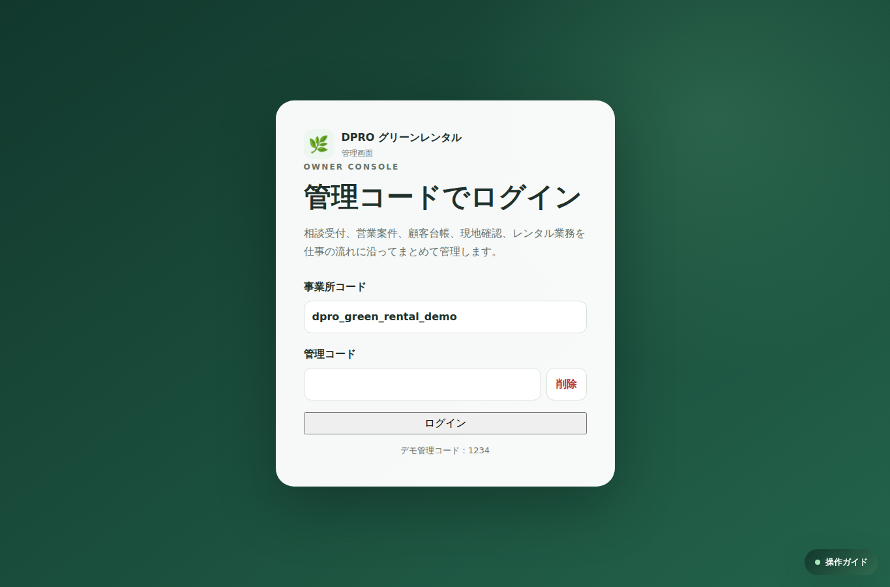
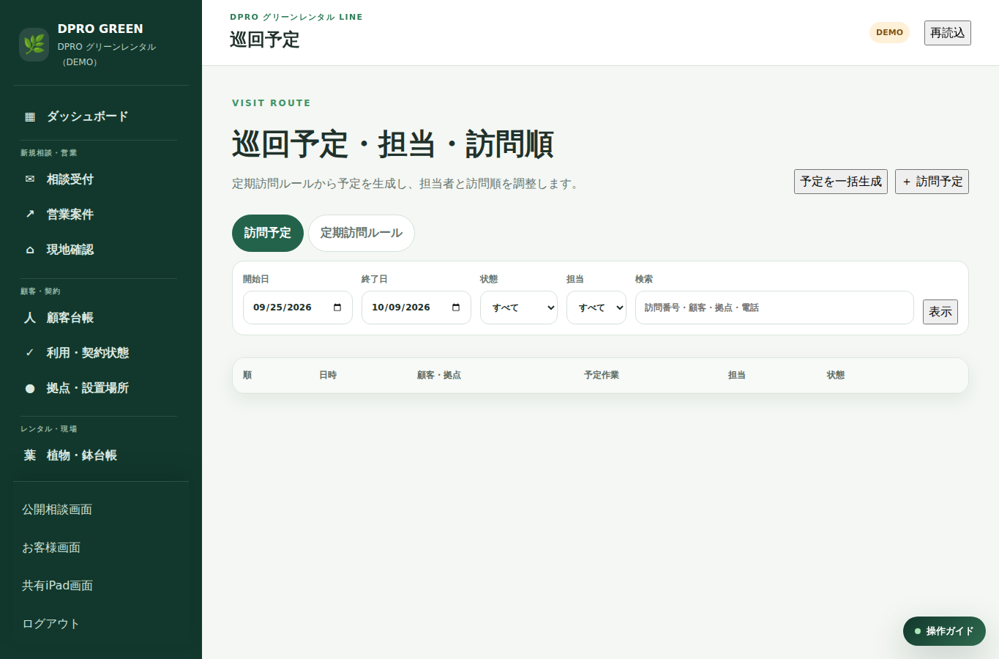
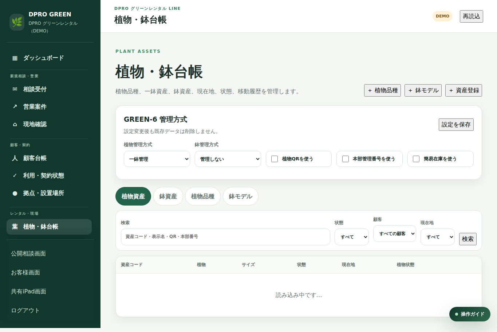
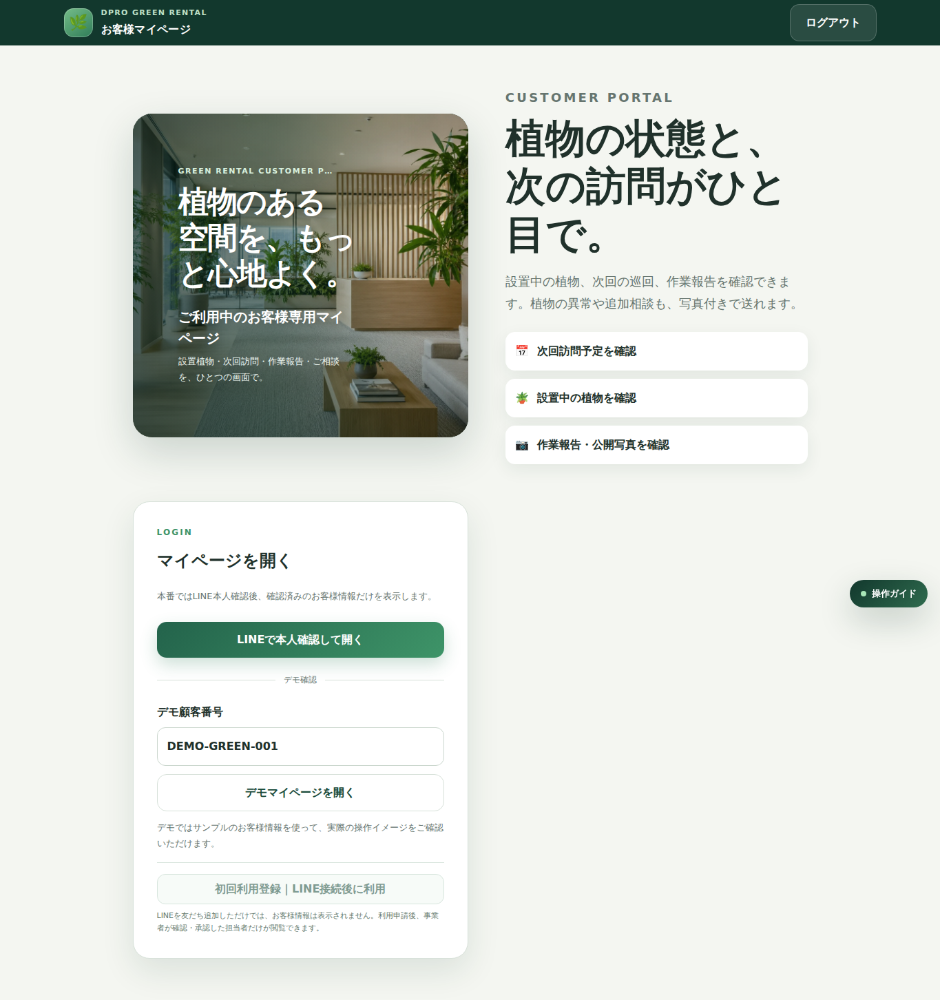

01 管理PC・全体ダッシュボードDPRO GREEN
OPERATION EXPERIENCE SHEET / V1.0
実画面を見ながら、
最初の操作を確認。
観葉植物レンタルの管理PC・巡回・お客様報告を、FINAL LOCK済みデモ画面で体験できます。
A4 / 実画面

02 巡回・訪問管理
03 植物・鉢台帳
04 お客様・作業報告STEP 01今日の状況を見る
訪問予定・対応状況を確認。
STEP 02植物と設置先を見る
植物・鉢・現在地を確認。
STEP 03巡回を記録する
担当・順番・作業状態を更新。
STEP 04報告・交換へつなぐ
写真報告と交換後の履歴へ。
公式説明DPRO SHOP
製品ページPRODUCT SITE
LIVE DEMO実画面を操作
LINE相談導入相談